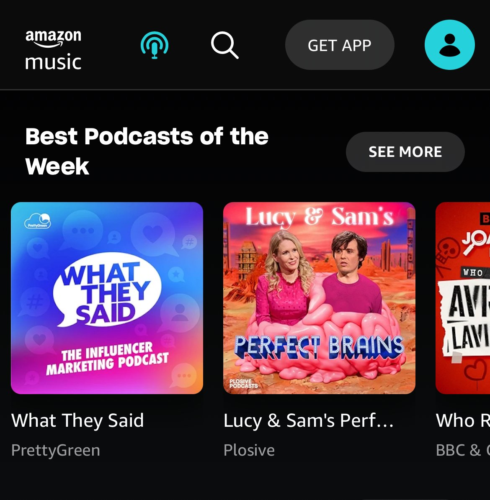

Producer and project manager of the agency's own podcast, end-to-end.
Producer and project manager of the What They Said podcast: creative conception, setting KPIs and budgets, guest outreach, organic and paid social strategy and activation.
What They Said was proudly featured in Amazon's "Best Podcasts of the Week" upon launch and ranked in the Top Marketing Podcast charts in its first month. With thousands of streams to date, it led to a significant uplift in website traffic and resulted in new business opportunities — fitting in with the agency's wider business objective.
The show has since grown across further seasons — senior marketers from Mondelez, Google, Bupa and innocent have all featured as guests, discussing how brands really get famous: the thinking, decisions and big plays behind the comms strategies that drive relevance, cultural impact and long-term growth.
Bupa's Global Brand Director, Fiona Bosman, joined Season 2 to talk brand storytelling — see the Bupa case study →
Listen: "How Furby Hijacked Christmas" (Ep. 4)
